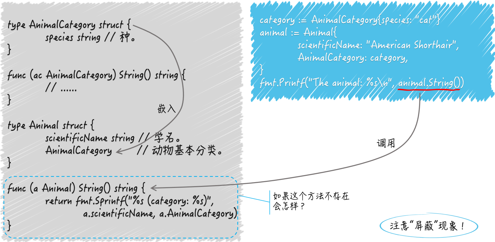

- 00 导读 写给0基础入门的Go语言学习者.md.html
- 00 导读 学习专栏的正确姿势.md.html
- 00 开篇词 跟着学，你也能成为Go语言高手.md.html
- 01 工作区和GOPATH.md.html
- 02 命令源码文件.md.html
- 03 库源码文件.md.html
- 04 程序实体的那些事儿（上）.md.html
- 05 程序实体的那些事儿（中）.md.html
- 06 程序实体的那些事儿 （下）.md.html
- 07 数组和切片.md.html
- 08 container包中的那些容器.md.html
- 09 字典的操作和约束.md.html
- 10 通道的基本操作.md.html
- 11 通道的高级玩法.md.html
- 12 使用函数的正确姿势.md.html
- 13 结构体及其方法的使用法门.md.html
- 14 接口类型的合理运用.md.html
- 15 关于指针的有限操作.md.html
- 16 go语句及其执行规则（上）.md.html
- 17 go语句及其执行规则（下）.md.html
- 18 if语句、for语句和switch语句.md.html
- 19 错误处理（上）.md.html
- 20 错误处理 （下）.md.html
- 21 panic函数、recover函数以及defer语句 （上）.md.html
- 22 panic函数、recover函数以及defer语句（下）.md.html
- 23 测试的基本规则和流程 （上）.md.html
- 24 测试的基本规则和流程（下）.md.html
- 25 更多的测试手法.md.html
- 26 sync.Mutex与sync.RWMutex.md.html
- 27 条件变量sync.Cond （上）.md.html
- 28 条件变量sync.Cond （下）.md.html
- 29 原子操作（上）.md.html
- 30 原子操作（下）.md.html
- 31 sync.WaitGroup和sync.Once.md.html
- 32 context.Context类型.md.html
- 33 临时对象池sync.Pool.md.html
- 34 并发安全字典sync.Map （上）.md.html
- 35 并发安全字典sync.Map (下).md.html
- 36 unicode与字符编码.md.html
- 37 strings包与字符串操作.md.html
- 38 bytes包与字节串操作（上）.md.html
- 39 bytes包与字节串操作（下）.md.html
- 40 io包中的接口和工具 （上）.md.html
- 41 io包中的接口和工具 （下）.md.html
- 42 bufio包中的数据类型 （上）.md.html
- 43 bufio包中的数据类型（下）.md.html
- 44 使用os包中的API （上）.md.html
- 45 使用os包中的API （下）.md.html
- 46 访问网络服务.md.html
- 47 基于HTTP协议的网络服务.md.html
- 48 程序性能分析基础（上）.md.html
- 49 程序性能分析基础（下）.md.html
- 尾声 愿你披荆斩棘，所向无敌.md.html
- 新年彩蛋 完整版思考题答案.md.html
- 捐赠
13 结构体及其方法的使用法门
我们都知道，结构体类型表示的是实实在在的数据结构。一个结构体类型可以包含若干个字段，每个字段通常都需要有确切的名字和类型。
前导内容：结构体类型基础知识
当然了，结构体类型也可以不包含任何字段，这样并不是没有意义的，因为我们还可以为类型关联上一些方法，这里你可以把方法看做是函数的特殊版本。
函数是独立的程序实体。我们可以声明有名字的函数，也可以声明没名字的函数，还可以把它们当做普通的值传来传去。我们能把具有相同签名的函数抽象成独立的函数类型，以作为一组输入、输出（或者说一类逻辑组件）的代表。
方法却不同，它需要有名字，不能被当作值来看待，最重要的是，它必须隶属于某一个类型。方法所属的类型会通过其声明中的接收者（receiver）声明体现出来。
接收者声明就是在关键字func和方法名称之间的圆括号包裹起来的内容，其中必须包含确切的名称和类型字面量。
接收者的类型其实就是当前方法所属的类型，而接收者的名称，则用于在当前方法中引用它所属的类型的当前值。
我们举个例子来看一下。
// AnimalCategory 代表动物分类学中的基本分类法。
type AnimalCategory struct {
kingdom string // 界。
phylum string // 门。
class string // 纲。
order string // 目。
family string // 科。
genus string // 属。
species string // 种。
}
func (ac AnimalCategory) String() string {
return fmt.Sprintf("%s%s%s%s%s%s%s",
ac.kingdom, ac.phylum, ac.class, ac.order,
ac.family, ac.genus, ac.species)
}
结构体类型AnimalCategory代表了动物的基本分类法，其中有7个string类型的字段，分别表示各个等级的分类。
下边有个名叫String的方法，从它的接收者声明可以看出它隶属于AnimalCategory类型。
通过该方法的接收者名称ac，我们可以在其中引用到当前值的任何一个字段，或者调用到当前值的任何一个方法（也包括String方法自己）。
这个String方法的功能是提供当前值的字符串表示形式，其中的各个等级分类会按照从大到小的顺序排列。使用时，我们可以这样表示：
category := AnimalCategory{species: "cat"}
fmt.Printf("The animal category: %s\n", category)
这里，我用字面量初始化了一个AnimalCategory类型的值，并把它赋给了变量category。为了不喧宾夺主，我只为其中的species字段指定了字符串值"cat"，该字段代表最末级分类“种”。
在Go语言中，我们可以通过为一个类型编写名为String的方法，来自定义该类型的字符串表示形式。这个String方法不需要任何参数声明，但需要有一个string类型的结果声明。
正因为如此，我在调用fmt.Printf函数时，使用占位符%s和category值本身就可以打印出后者的字符串表示形式，而无需显式地调用它的String方法。
fmt.Printf函数会自己去寻找它。此时的打印内容会是The animal category: cat。显而易见，category的String方法成功地引用了当前值的所有字段。
方法隶属的类型其实并不局限于结构体类型，但必须是某个自定义的数据类型，并且不能是任何接口类型。
一个数据类型关联的所有方法，共同组成了该类型的方法集合。同一个方法集合中的方法不能出现重名。并且，如果它们所属的是一个结构体类型，那么它们的名称与该类型中任何字段的名称也不能重复。
我们可以把结构体类型中的一个字段看作是它的一个属性或者一项数据，再把隶属于它的一个方法看作是附加在其中数据之上的一个能力或者一项操作。将属性及其能力（或者说数据及其操作）封装在一起，是面向对象编程（object-oriented programming）的一个主要原则。
Go语言摄取了面向对象编程中的很多优秀特性，同时也推荐这种封装的做法。从这方面看，Go语言其实是支持面向对象编程的，但它选择摒弃了一些在实际运用过程中容易引起程序开发者困惑的特性和规则。
现在，让我们再把目光放到结构体类型的字段声明上。我们来看下面的代码：
type Animal struct {
scientificName string // 学名。
AnimalCategory // 动物基本分类。
}
我声明了一个结构体类型，名叫Animal。它有两个字段。一个是string类型的字段scientificName，代表了动物的学名。而另一个字段声明中只有AnimalCategory，它正是我在前面编写的那个结构体类型的名字。这是什么意思呢？
那么，我们今天的问题是：Animal类型中的字段声明AnimalCategory代表了什么？
更宽泛地讲，如果结构体类型的某个字段声明中只有一个类型名，那么该字段代表了什么？
这个问题的典型回答是：字段声明AnimalCategory代表了Animal类型的一个嵌入字段。Go语言规范规定，如果一个字段的声明中只有字段的类型名而没有字段的名称，那么它就是一个嵌入字段，也可以被称为匿名字段。我们可以通过此类型变量的名称后跟“.”，再后跟嵌入字段类型的方式引用到该字段。也就是说，嵌入字段的类型既是类型也是名称。
问题解析
说到引用结构体的嵌入字段，Animal类型有个方法叫Category，它是这么写的：
func (a Animal) Category() string {
return a.AnimalCategory.String()
}
Category方法的接收者类型是Animal，接收者名称是a。在该方法中，我通过表达式a.AnimalCategory选择到了a的这个嵌入字段，然后又选择了该字段的String方法并调用了它。
顺便提一下，在某个代表变量的标识符的右边加“.”，再加上字段名或方法名的表达式被称为选择表达式，它用来表示选择了该变量的某个字段或者方法。
这是Go语言规范中的说法，与“引用结构体的某某字段”或“调用结构体的某某方法”的说法是相通的。我在以后会混用这两种说法。
实际上，把一个结构体类型嵌入到另一个结构体类型中的意义不止如此。嵌入字段的方法集合会被无条件地合并进被嵌入类型的方法集合中。例如下面这种：
animal := Animal{
scientificName: "American Shorthair",
AnimalCategory: category,
}
fmt.Printf("The animal: %s\n", animal)
我声明了一个Animal类型的变量animal并对它进行初始化。我把字符串值"American Shorthair"赋给它的字段scientificName，并把前面声明过的变量category赋给它的嵌入字段AnimalCategory。
我在后面使用fmt.Printf函数和%s占位符试图打印animal的字符串表示形式，相当于调用animal的String方法。虽然我们还没有为Animal类型编写String方法，但这样做是没问题的。因为在这里，嵌入字段AnimalCategory的String方法会被当做animal的方法调用。
那如果我也为Animal类型编写一个String方法呢？这里会调用哪一个呢？
答案是，animal的String方法会被调用。这时，我们说，嵌入字段AnimalCategory的String方法被“屏蔽”了。注意，只要名称相同，无论这两个方法的签名是否一致，被嵌入类型的方法都会“屏蔽”掉嵌入字段的同名方法。
类似的，由于我们同样可以像访问被嵌入类型的字段那样，直接访问嵌入字段的字段，所以如果这两个结构体类型里存在同名的字段，那么嵌入字段中的那个字段一定会被“屏蔽”。这与我们在前面讲过的，可重名变量之间可能存在的“屏蔽”现象很相似。
正因为嵌入字段的字段和方法都可以“嫁接”到被嵌入类型上，所以即使在两个同名的成员一个是字段，另一个是方法的情况下，这种“屏蔽”现象依然会存在。
不过，即使被屏蔽了，我们仍然可以通过链式的选择表达式，选择到嵌入字段的字段或方法，就像我在Category方法中所做的那样。这种“屏蔽”其实还带来了一些好处。我们看看下面这个Animal类型的String方法的实现：
func (a Animal) String() string {
return fmt.Sprintf("%s (category: %s)",
a.scientificName, a.AnimalCategory)
}
在这里，我们把对嵌入字段的String方法的调用结果融入到了Animal类型的同名方法的结果中。这种将同名方法的结果逐层“包装”的手法是很常见和有用的，也算是一种惯用法了。
- （结构体类型中的嵌入字段）
最后，我还要提一下多层嵌入的问题。也就是说，嵌入字段本身也有嵌入字段的情况。请看我声明的Cat类型：
type Cat struct {
name string
Animal
}
func (cat Cat) String() string {
return fmt.Sprintf("%s (category: %s, name: %q)",
cat.scientificName, cat.Animal.AnimalCategory, cat.name)
}
结构体类型Cat中有一个嵌入字段Animal，而Animal类型还有一个嵌入字段AnimalCategory。
在这种情况下，“屏蔽”现象会以嵌入的层级为依据，嵌入层级越深的字段或方法越可能被“屏蔽”。
例如，当我们调用Cat类型值的String方法时，如果该类型确有String方法，那么嵌入字段Animal和AnimalCategory的String方法都会被“屏蔽”。
如果该类型没有String方法，那么嵌入字段Animal的String方法会被调用，而它的嵌入字段AnimalCategory的String方法仍然会被屏蔽。
只有当Cat类型和Animal类型都没有String方法的时候，AnimalCategory的String方法菜会被调用。
最后的最后，如果处于同一个层级的多个嵌入字段拥有同名的字段或方法，那么从被嵌入类型的值那里，选择此名称的时候就会引发一个编译错误，因为编译器无法确定被选择的成员到底是哪一个。
以上关于嵌入字段的所有示例都在demo29.go中，希望能对你有所帮助。
知识扩展
问题1：Go语言是用嵌入字段实现了继承吗？
这里强调一下，Go语言中根本没有继承的概念，它所做的是通过嵌入字段的方式实现了类型之间的组合。这样做的具体原因和理念请见Go语言官网的FAQ中的Why is there no type inheritance?。
简单来说，面向对象编程中的继承，其实是通过牺牲一定的代码简洁性来换取可扩展性，而且这种可扩展性是通过侵入的方式来实现的。
类型之间的组合采用的是非声明的方式，我们不需要显式地声明某个类型实现了某个接口，或者一个类型继承了另一个类型。
同时，类型组合也是非侵入式的，它不会破坏类型的封装或加重类型之间的耦合。
我们要做的只是把类型当做字段嵌入进来，然后坐享其成地使用嵌入字段所拥有的一切。如果嵌入字段有哪里不合心意，我们还可以用“包装”或“屏蔽”的方式去调整和优化。
另外，类型间的组合也是灵活的，我们总是可以通过嵌入字段的方式把一个类型的属性和能力“嫁接”给另一个类型。
这时候，被嵌入类型也就自然而然地实现了嵌入字段所实现的接口。再者，组合要比继承更加简洁和清晰，Go语言可以轻而易举地通过嵌入多个字段来实现功能强大的类型，却不会有多重继承那样复杂的层次结构和可观的管理成本。
接口类型之间也可以组合。在Go语言中，接口类型之间的组合甚至更加常见，我们常常以此来扩展接口定义的行为或者标记接口的特征。与此有关的内容我在下一篇文章中再讲。
在我面试过的众多Go工程师中，有很多人都在说“Go语言用嵌入字段实现了继承”，而且深信不疑。
要么是他们还在用其他编程语言的视角和理念来看待Go语言，要么就是受到了某些所谓的“Go语言教程”的误导。每当这时，我都忍不住当场纠正他们，并建议他们去看看官网上的解答。
问题2：值方法和指针方法都是什么意思，有什么区别？
我们都知道，方法的接收者类型必须是某个自定义的数据类型，而且不能是接口类型或接口的指针类型。所谓的值方法，就是接收者类型是非指针的自定义数据类型的方法。
比如，我们在前面为AnimalCategory、Animal以及Cat类型声明的那些方法都是值方法。就拿Cat来说，它的String方法的接收者类型就是Cat，一个非指针类型。那什么叫指针类型呢？请看这个方法：
func (cat *Cat) SetName(name string) {
cat.name = name
}
方法SetName的接收者类型是*Cat。Cat左边再加个*代表的就是Cat类型的指针类型。
这时，Cat可以被叫做*Cat的基本类型。你可以认为这种指针类型的值表示的是指向某个基本类型值的指针。
我们可以通过把取值操作符*放在这样一个指针值的左边来组成一个取值表达式，以获取该指针值指向的基本类型值，也可以通过把取址操作符&放在一个可寻址的基本类型值的左边来组成一个取址表达式，以获取该基本类型值的指针值。
所谓的指针方法，就是接收者类型是上述指针类型的方法。
那么值方法和指针方法之间有什么不同点呢？它们的不同如下所示。
-
值方法的接收者是该方法所属的那个类型值的一个副本。我们在该方法内对该副本的修改一般都不会体现在原值上，除非这个类型本身是某个引用类型（比如切片或字典）的别名类型。-
而指针方法的接收者，是该方法所属的那个基本类型值的指针值的一个副本。我们在这样的方法内对该副本指向的值进行修改，却一定会体现在原值上。-
-
一个自定义数据类型的方法集合中仅会包含它的所有值方法，而该类型的指针类型的方法集合却囊括了前者的所有方法，包括所有值方法和所有指针方法。-
严格来讲，我们在这样的基本类型的值上只能调用到它的值方法。但是，Go语言会适时地为我们进行自动地转译，使得我们在这样的值上也能调用到它的指针方法。-
比如，在
Cat类型的变量cat之上，之所以我们可以通过cat.SetName("monster")修改猫的名字，是因为Go语言把它自动转译为了(&cat).SetName("monster")，即：先取cat的指针值，然后在该指针值上调用SetName方法。 -
在后边你会了解到，一个类型的方法集合中有哪些方法与它能实现哪些接口类型是息息相关的。如果一个基本类型和它的指针类型的方法集合是不同的，那么它们具体实现的接口类型的数量就也会有差异，除非这两个数量都是零。-
比如，一个指针类型实现了某某接口类型，但它的基本类型却不一定能够作为该接口的实现类型。
能够体现值方法和指针方法之间差异的小例子我放在demo30.go文件里了，你可以参照一下。
总结
结构体类型的嵌入字段比较容易让Go语言新手们迷惑，所以我在本篇文章着重解释了它的编写方法、基本的特性和规则以及更深层次的含义。在理解了结构体类型及其方法的组成方式和构造套路之后，这些知识应该是你重点掌握的。
嵌入字段是其声明中只有类型而没有名称的字段，它可以以一种很自然的方式为被嵌入的类型带来新的属性和能力。在一般情况下，我们用简单的选择表达式就可以直接引用到它们的字段和方法。
不过，我们需要小心可能产生“屏蔽”现象的地方，尤其是当存在多个嵌入字段或者多层嵌入的时候。“屏蔽”现象可能会让你的实际引用与你的预期不符。
另外，你一定要梳理清楚值方法和指针方法的不同之处，包括这两种方法各自能做什么、不能做什么以及会影响到其所属类型的哪些方面。这涉及值的修改、方法集合和接口实现。
最后，再次强调，嵌入字段是实现类型间组合的一种方式，这与继承没有半点儿关系。Go语言虽然支持面向对象编程，但是根本就没有“继承”这个概念。
思考题
- 我们可以在结构体类型中嵌入某个类型的指针类型吗？如果可以，有哪些注意事项？
- 字面量
struct{}代表了什么？又有什么用处？
© 2019 - 2023 Liangliang Lee. Powered by gin and hexo-theme-book.